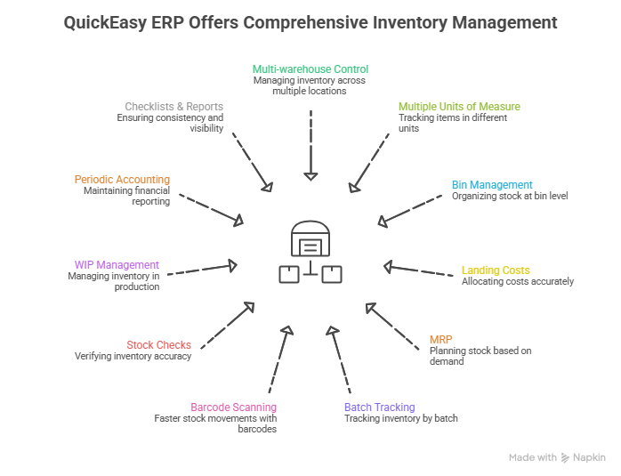

Inventory Management Software
If your business depends on stock, inventory is not a side issue. It is the main issue. It affects your cash flow, customer service, purchasing, fulfilment, production planning, and reporting. When stock control is weak, the knock-on effects show up everywhere. That is why more businesses are turning to an inventory management system or inventory management software that gives them better visibility and tighter control.
For many SMEs, manufacturers, engineering companies, printing, packaging, and signage companies, inventory is still managed through manual processes or disconnected tools. That might hold up for a while. But as order volumes grow, stock locations multiply, and reporting requirements become more demanding, those processes start to fail.
This guide explains what an inventory management system is, what inventory management software does, why it matters, what features you should look for, and how to choose a solution that supports the way your business actually operates.
Skip ahead: I need superior inventory management
Key Takeaways
- An inventory management system helps you track, control, and report on stock across the business.
- Inventory management software supports visibility, replenishment, movement tracking, reporting, and accountability.
- Poor inventory control affects cash flow, customer service, fulfilment, planning, and reporting.
- Spreadsheets often fail once stock complexity increases.
- Integrated ERP for manufacturing and printing with built-in inventory management is often better for businesses with operational and financial complexity.
- QuickEasy ERP automates and simplifies stock control as part of a wider, more connected business system.
At a Glance: What Inventory Management Software Helps You Do
A good inventory management software solution helps you:
- track stock accurately across the business
- reduce stockouts and overstocking
- improve purchasing decisions
- manage stock across one or more locations
- link stock activity to sales, procurement, finance, and operations
- improve reporting, accountability, and planning
What Is an Inventory Management System?
An inventory management system is a tool or software solution that helps you track, control, organise, and report on stock across your business.
In simple terms, inventory management systems help you understand:
- what stock you have
- where that stock is
- how much is available
- what has been sold, moved, used, returned, or ordered
- when stock needs to be replenished
A proper inventory management system does more than record quantities. It helps you manage stock as part of your wider business process. That includes purchasing, warehousing, sales, production, dispatch, and financial visibility.
Put simply, it replaces uncertainty with control.
What QuickEasy’s Inventory Management Includes
QuickEasy – the ERP system for SMEs that unifies your entire business into one safe, secure place – gives you practical inventory control that connects entirely and holistically to the wider business.
That matters because inventory does not sit on its own. It affects purchasing, warehousing, production, pricing, reporting, and financial accuracy. QuickEasy’s inventory management functionality is built to help you manage those moving parts with more visibility, better control, and less admin.

Multi-warehouse and multi-location stock control
Manage inventory across multiple warehouses, branches, bins, and locations from one system. Whether stock sits in internal stores, customer sites, or supplier-linked locations, QuickEasy helps you keep tighter control without losing visibility.
Multiple units of measure
Track the same item in different units of measure with greater accuracy. That is especially useful when stock is bought one way, stored another way, and sold or used in a different format altogether.
Bin management
Organise stock at bin level within your warehouse so items are easier to store, locate, move, and issue. It is a practical way to improve day-to-day warehouse efficiency.
Landing costs and automatic cost updates
QuickEasy helps you allocate landing costs more accurately and updates inventory costs using weighted average costing. That gives you a cleaner view of stock value and supports more reliable cost management.
MRP, replenishment, and reorder control
Use material requirements planning, replenishment tools, and reorder points to keep stock aligned with operational demand. This helps you reduce avoidable stock pressure while supporting continuity in production and supply.
Batch and serial number tracking
Track inventory by batch or serial number where traceability matters. This supports stronger control, better auditability, and clearer handling of quality, warranty, and compliance requirements.
Barcode scanning and stock movement control
Support faster, more accurate stock movements with barcode scanning and structured transaction tracking. QuickEasy records goods issues, returns, receipts, and transfers, giving you a clearer picture of how stock moves through the business.
Stock checks, adjustments, and approvals
Run stock checks with approval workflows built in, and make stock adjustments directly from the items dashboard when needed. That helps improve accuracy while adding accountability to inventory changes and audits.
Work in progress management
Manage work in progress more accurately so inventory tied to jobs, projects, or production remains visible and easier to control as it moves through the business.
Periodic inventory accounting and price management
QuickEasy supports periodic inventory accounting and inventory price management, helping you maintain cleaner financial reporting and stronger pricing discipline as costs change.
Checklists, reports, and dashboards
Use checklists and approvals to bring more consistency to inventory handling, then back that up with detailed reports and dashboards. QuickEasy includes reporting on stock movement, stock levels, ageing, replenishment, overstock, understock, serial numbers, batch tracking, and pricing, with drill-down, sorting, grouping, filtering, comparative views, and customisable outputs.
Why Inventory Management Matters More Than Most Businesses Think
Inventory problems rarely stay in the warehouse. They spread across the business.
- It affects cash flow. Too much stock ties up capital that could be used elsewhere. Too little stock puts revenue at risk. Poor visibility often leads to poor buying decisions.
- It affects customer service. If customers cannot get what they ordered, or if fulfilment is delayed because stock information is wrong, trust takes a hit.
- It affects production and fulfilment. Manufacturers, distributors, and stock-driven businesses rely on accurate inventory to plan effectively. Missing stock can hold up entire workflows.
- It affects reporting. If stock figures are inaccurate, reporting becomes unreliable. Finance struggles with valuation, managers lose confidence in the numbers, and teams spend time arguing over data instead of solving problems.
- It affects accountability. When stock records are unclear, it becomes much harder to understand what happened, where a problem started, or who needs to address it.
- It affects planning. Without confidence in stock data, forecasting, replenishment, and purchasing become reactive rather than informed.
That is why a good inventory management system is not just about stock check. It is about giving the business a more reliable operational foundation.
Signs You’ve Outgrown Spreadsheets and Manual Stock Control
Many businesses do not upgrade their stock processes because they think spreadsheets are still “good enough”. In reality, spreadsheets often become risky long before the business realises it. Here are some clear warning signs.
Your stock figures are regularly questioned
If warehouse staff, purchasing, finance, and sales all seem to have different numbers, your current process is no longer giving the business a trusted source of truth.
You run out of stock unexpectedly
Frequent stockouts usually point to poor visibility, weak reorder controls, or delays in updating records.
You over-order just to be safe
If the business keeps carrying too much stock “just in case”, it often means nobody fully trusts the data.
Your teams rely on workarounds
If stock control depends on WhatsApp messages, paper notes, verbal updates, or side spreadsheets, your process is already fragmented.
Stock across locations is hard to manage
Once you start working across multiple warehouses, branches, or storage points, manual tracking becomes much harder to control accurately.
Manual stock checks take too much time
If the team constantly needs physical counts just to restore confidence in the numbers, your system is doing too little.
Sales and operations are not aligned
If customer-facing teams promise stock that is not actually available, or warehousing cannot see the latest order activity, the business is working in silos.
Reporting is slow or unreliable
If stock reporting takes too long to produce or is open to debate every month, the business needs a stronger system.
Related: Business Owners, Here’s How to Escape the Gilded Cage of Spreadsheets
Key Features to Look for in Inventory Management Software
Not all inventory management software is equally useful. The right fit depends on the complexity of your business, but there are core features most growing businesses should look for.
Real-time stock visibility
As a bare minimum, you need to know what is available now, not what was available the last time someone updated a spreadsheet. QuickEasy offers this, and more.
Multi-location stock control
If stock is held across multiple warehouses, stores, or branches, your system should help you manage visibility and transfers clearly. QuickEasy is multi-location, multi-entity, multi-currency.
Reorder and purchasing support
A good stock control system should help you identify replenishment needs and support more structured buying. QuickEasy support supplier management and procurement with ease.
Audit trails
You need a record of adjustments, transfers, receipts, and issues. This improves accountability and reduces the risk of unexplained stock loss. QuickEasy allows for tiered approvals, audit trails, and 100% accountability and transparency.
Reporting and analytics
A stronger system helps you review stock movement, stock turn, slow-moving items, valuation, and usage trends. QuickEasy’s reports and dashboards are transaction-driven. This means it happens in real-time, and your dashboards are automatically updated.
User permissions and controls
Not every user should have the same access. Good permissions reduce mistakes and improve governance. QuickEasy gives managers full control over who sees what information.
Integration with sales, finance, and operations
This is a major differentiator. If inventory sits in a separate system, gaps and delays become more likely. QuickEasy is a true single system – no add-ons required.
Batch, lot, or serial tracking
Where traceability matters, this is essential for control, quality, and follow-through. QuickEasy allows you to trace back to source.
Warehouse visibility
Your system should reflect the real movement of stock, from receipt through storage, issue, and dispatch. QuickEasy supports this in full.
Production or manufacturing support
For manufacturers, stock is not just finished goods. It includes raw materials, components, work in progress, and usage. An inventory management system for manufacturers should support this properly, which QuickEasy does.
Explore: How to Safely Modernise Your Business (Without Losing Data, Control, or Sleep)
Inventory Management Software vs ERP System: Which is Better?
This is a key question for businesses evaluating software. Some inventory management software products are standalone tools. They focus mainly on stock tracking and stock movement. That may be enough for smaller or simpler environments.
But for many businesses, inventory is tightly linked to purchasing, sales, finance, production, and fulfilment. In those cases, standalone tools often create new operational gaps.
Standalone inventory software
This is usually designed for basic stock control. It may help with quantities, movement, and visibility, but often requires separate systems for other business functions.
ERP with built-in inventory management
With ERP systems for SMEs, inventory management sits inside a broader business system. That means stock activity connects more directly to sales, procurement, financial records, and operations. That matters because inventory does not operate in isolation. It affects how the whole business runs.

When a stock system is part of your ERP, it connects the rest of your business. These are the benefits
- Single data capture – no more duplicate capturing
- Faster action – no more delays between teams
- Automated, accurate reports – no more mismatched reports
- 360 degree clarity – no more poor visibility
- Comprehensive audits at every stage – no more weak accountability
- Streamlined, integrated operations – no more process gaps
For businesses with more operational complexity, integrated ERP-style inventory management is often the more practical long-term choice.
Which Businesses Benefit Most from an Inventory Management System?
Almost any stock-driven business can benefit from an inventory management system, but the need becomes more urgent in certain environments.
Manufacturers
Manufacturers need visibility into raw materials, components, work in progress, and finished goods. Inventory accuracy directly affects production planning and delivery performance.
Related: Best ERP Software for Small Manufacturing Businesses
Engineering and industrial businesses
Where inventory includes service parts, consumables, or critical components, control and traceability matter.
Related: A Single System for Engineering Companies in South Africa
Multi-branch or multi-warehouse businesses
Once stock is spread across sites, manual tracking becomes much harder to manage reliably.
Related: Improved Inventory and Procurement Management in a South African Context
Businesses with high-value stock
The higher the stock value, the more important audit trails, visibility, and tighter control become.
Businesses with fast-moving stock
Where demand cycles move quickly, stock accuracy becomes essential for customer service and planning.
SMEs preparing to scale
An inventory software for SMEs should help support growth before operational complexity starts creating avoidable problems.
Related: Why SMEs are implementing ERP solutions, how to do it yourself.
How the Right Inventory Management System Improves Your Business

A good inventory management system does not just help you count stock better. It helps you run the business better.
Better purchasing decisions.
When stock levels, usage patterns, and reorder needs are visible, buying becomes more informed and less reactive.
Better cash flow control
You are less likely to tie up money in unnecessary stock when the business can see what is actually needed.
Better stock planning
You can identify slow-moving items, demand patterns, and replenishment needs more clearly.
Better operational alignment
Sales, warehousing, procurement, production, and finance all benefit when they are working from the same information.
Better accountability
Structured controls and audit trails make it easier to understand what happened and where a problem started.
Better reporting
Management decisions improve when reports are based on real operational activity rather than stitched-together manual inputs. The right software supports control, but it also supports confidence.
Related: What ERP Solution Should I Choose for Inventory Management?
What to Consider When Choosing Inventory Management Software in South Africa
There is no value in choosing software that looks good on paper but does not fit the reality of your business. When evaluating inventory management software South Africa businesses should think carefully about the following.
- Business fit. Does the system suit your stock profile, operational model, and reporting needs? A generic solution may not support the way your business really works.
- Expert support. Can you get practical support from people who understand your environment and can help when problems need solving quickly?
- Scalability. Can the system support growth in locations, users, transaction volume, and stock complexity?
- Built-in or bolted-on. Does the software properly connect purchasing, sales, finance, production, and reporting, or will the business still rely on workarounds?
- Ease of implementation. A strong system still needs to be practical to implement and adopt. If it is too hard to use, the business will struggle to realise value from it. View QuickEasy’s trusted implementation methodology.
- Reporting quality. Can decision-makers get the information they need without exporting data into spreadsheets for further manipulation?
- Control and governance. Does the system support permissions, traceability, auditability, and cleaner process discipline?
- Industry-specific requirements. If your business needs batch tracking, serial tracking, multi-location visibility, manufacturing integration, or stock valuation support, the system needs to handle that properly.
Why QuickEasy ERP May Be the Best Inventory Management Solution for You
QuickEasy BOS is designed for businesses that need more than a basic stock tool. This easy to use, all-in-one system supports full inventory management as part of a wider operational and financial system. That matters because stock touches everything.

Advanced inventory management capabilities linked to the wider business
Inventory should not sit in a disconnected silo. QuickEasy supports stock control in a way that connects more cleanly to broader business activity.
Better operational and financial visibility
When inventory activity links to the numbers the business depends on, reporting becomes more reliable and accountability becomes easier to maintain.
Support for structured growth
As the business grows, spreadsheets and disconnected tools often become a limitation. QuickEasy supports more disciplined stock control for businesses that need stronger process support.
Cleaner reporting and clearer accountability
A more structured system makes it easier to trace movements, review stock activity, and reduce confusion caused by fragmented records.
A practical fit for stock-driven businesses
For manufacturers, wholesalers, distributors, and other operationally active SMEs, the real value lies in visibility, control, and integration.
QuickEasy is not about layering on more software. It is about helping your business manage inventory in a way that supports real operational performance.
Get the Intelligent Inventory Management Solution for Your Business
A strong inventory management system does much more than tell you how much stock you have. It helps you create better visibility, tighter control, stronger accountability, and more reliable decision-making across the business.
If your business still relies on spreadsheets, disconnected systems, or manual workarounds, there is a good chance those processes are already holding you back.
The right inventory management software helps you move from reactive stock control to a more structured way of working.
For businesses that need inventory linked properly to operations, purchasing, sales, and finance, QuickEasy offers a practical route to stronger stock control and cleaner business visibility. If you are reviewing your current stock processes, now is a good time to ask whether your systems are helping the business grow or quietly getting in the way.
Speak to the experts at QuickEasy about your inventory management needs and see how a more connected system can support tighter control across your business.
Let’s take this conversation further: Enquire today
FAQs About Inventory Management Software
What is the best inventory management software for SMEs?
The best inventory management software for small businesses is software that gives you accurate stock visibility, helps prevent stockouts and over-ordering, and is easy to use. If your stock links closely to sales, purchasing, or finance, an integrated system like QuickEasy is often the better choice because it gives you stronger control across the business.
What is the difference between stock control and inventory management?
Stock control usually refers to tracking quantities and movement. Inventory management is broader. It includes replenishment, reporting, planning, visibility, and how stock supports wider business performance.
Can inventory management software help reduce stock loss?
Yes. All-in-one systems like QuickEasy bring better visibility, stronger audit trails, user permissions, and clearer movement tracking can all help reduce stock loss and unexplained adjustments.
Is inventory management software part of an ERP system?
It can be. Some products are standalone stock tools, while others form part of a wider ERP system. ERP-based inventory management like what QuickEasy offers is more effective when stock needs to connect to finance, sales, purchasing, or production.
How do I know if my business needs an inventory management system?
If your business struggles with stock accuracy, stockouts, over-ordering, manual workarounds, reporting delays, or poor visibility across locations, it is likely time to move to an inventory management system like what QuickEasy ERP offers.
What features should inventory software have?
Most growing businesses should look for real-time stock visibility, reporting, audit trails, reorder support, permissions, multi-location control, and integration with wider business processes. QuickEasy’s inventory management functionality provides all of this in one easy-to-use system.
Can inventory software help with multi-warehouse stock control?
Yes. A good warehouse inventory management software solution should help you view stock across locations, manage transfers, and improve visibility between sites. QuickEasy BOS is multi-location, multi-entity, multi-currency, and ideally suited to streamline complex operations.